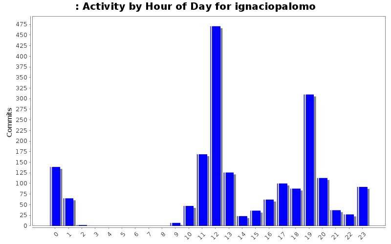
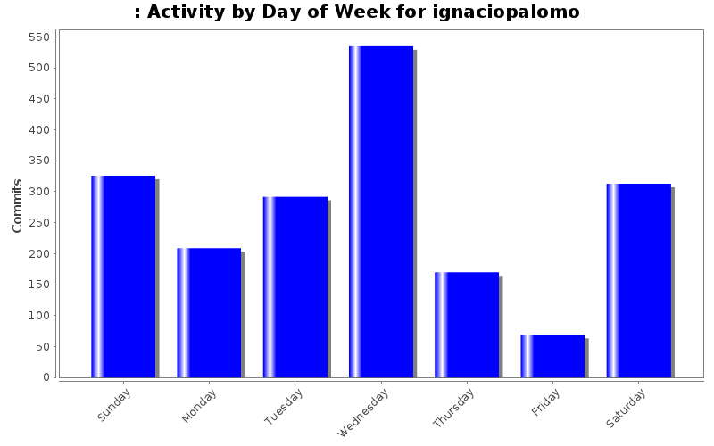
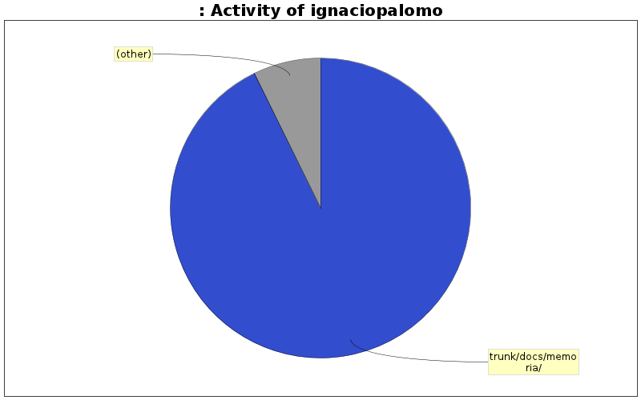

| Directory | Changes | Lines of Code | Lines per Change |
|---|---|---|---|
| Totals | 1914 (100.0%) | 275524 (100.0%) | 143.9 |
| trunk/docs/memoria/ | 360 (18.8%) | 255629 (92.8%) | 710.0 |
| trunk/ | 215 (11.2%) | 7782 (2.8%) | 36.1 |
| / | 267 (13.9%) | 5500 (2.0%) | 20.5 |
| trunk/docs/presentacion/ | 21 (1.1%) | 3287 (1.2%) | 156.5 |
| trunk/docs/presentacion/fonts/ | 28 (1.5%) | 1645 (0.6%) | 58.7 |
| trunk/artwork/logo/ | 6 (0.3%) | 821 (0.3%) | 136.8 |
| trunk/docs/memoria/imagenes/ | 51 (2.7%) | 479 (0.2%) | 9.3 |
| trunk/docs/presentacion/images/ | 85 (4.4%) | 125 (0.0%) | 1.4 |
| trunk/players/pro/ | 16 (0.8%) | 76 (0.0%) | 4.7 |
| trunk/players/easy/ | 11 (0.6%) | 40 (0.0%) | 3.6 |
| trunk/players/medium/ | 10 (0.5%) | 37 (0.0%) | 3.7 |
| trunk/players/lonely/ | 6 (0.3%) | 32 (0.0%) | 5.3 |
| trunk/players/bearded/ | 5 (0.3%) | 32 (0.0%) | 6.4 |
| trunk/player/easy/ | 2 (0.1%) | 21 (0.0%) | 10.5 |
| trunk/docs/memoria/estilos/ | 6 (0.3%) | 15 (0.0%) | 2.5 |
| trunk/docs/ | 2 (0.1%) | 3 (0.0%) | 1.5 |
| trunk/tutorial/ | 35 (1.8%) | 0 (0.0%) | 0.0 |
| trunk/themes/tron/sounds/tiles/ | 7 (0.4%) | 0 (0.0%) | 0.0 |
| trunk/themes/tron/sounds/music/ | 1 (0.1%) | 0 (0.0%) | 0.0 |
| trunk/themes/tron/sounds/ambient/ | 1 (0.1%) | 0 (0.0%) | 0.0 |
| trunk/themes/tron/images/tiles/ | 31 (1.6%) | 0 (0.0%) | 0.0 |
| trunk/themes/tron/images/gui/ | 1 (0.1%) | 0 (0.0%) | 0.0 |
| trunk/themes/tron/images/background/ | 3 (0.2%) | 0 (0.0%) | 0.0 |
| trunk/themes/spanish/images/gui/ | 2 (0.1%) | 0 (0.0%) | 0.0 |
| trunk/themes/fruits/sounds/tiles/ | 7 (0.4%) | 0 (0.0%) | 0.0 |
| trunk/themes/fruits/sounds/music/ | 1 (0.1%) | 0 (0.0%) | 0.0 |
| trunk/themes/fruits/sounds/ambient/ | 1 (0.1%) | 0 (0.0%) | 0.0 |
| trunk/themes/fruits/images/tiles/ | 61 (3.2%) | 0 (0.0%) | 0.0 |
| trunk/themes/fruits/images/gui/ | 2 (0.1%) | 0 (0.0%) | 0.0 |
| trunk/themes/fruits/images/background/ | 6 (0.3%) | 0 (0.0%) | 0.0 |
| trunk/themes/classic/images/tiles/ | 60 (3.1%) | 0 (0.0%) | 0.0 |
| trunk/images/ | 19 (1.0%) | 0 (0.0%) | 0.0 |
| trunk/fonts/ | 2 (0.1%) | 0 (0.0%) | 0.0 |
| trunk/docs/presentacion/original fonts/ | 7 (0.4%) | 0 (0.0%) | 0.0 |
| trunk/docs/plantilla_pfc/ | 11 (0.6%) | 0 (0.0%) | 0.0 |
| trunk/artwork/fruit/ | 8 (0.4%) | 0 (0.0%) | 0.0 |
| trunk/artwork/fonts/ | 3 (0.2%) | 0 (0.0%) | 0.0 |
| trunk/artwork/ | 17 (0.9%) | 0 (0.0%) | 0.0 |
| themes/spanish/sounds/tiles/ | 14 (0.7%) | 0 (0.0%) | 0.0 |
| themes/spanish/sounds/music/ | 2 (0.1%) | 0 (0.0%) | 0.0 |
| themes/spanish/sounds/ambient/ | 2 (0.1%) | 0 (0.0%) | 0.0 |
| themes/spanish/images/tiles/ | 62 (3.2%) | 0 (0.0%) | 0.0 |
| themes/spanish/images/gui/ | 2 (0.1%) | 0 (0.0%) | 0.0 |
| themes/spanish/images/background/ | 6 (0.3%) | 0 (0.0%) | 0.0 |
| themes/spanish/images/ | 2 (0.1%) | 0 (0.0%) | 0.0 |
| themes/spanish/ | 53 (2.8%) | 0 (0.0%) | 0.0 |
| themes/classic/images/tiles/ | 62 (3.2%) | 0 (0.0%) | 0.0 |
| themes/classic/images/gui/ | 2 (0.1%) | 0 (0.0%) | 0.0 |
| themes/classic/images/background/ | 2 (0.1%) | 0 (0.0%) | 0.0 |
| themes/classic/ | 35 (1.8%) | 0 (0.0%) | 0.0 |
| sounds/ | 24 (1.3%) | 0 (0.0%) | 0.0 |
| images/themes/spanish/ | 66 (3.4%) | 0 (0.0%) | 0.0 |
| images/themes/classic/ | 67 (3.5%) | 0 (0.0%) | 0.0 |
| images/ | 70 (3.7%) | 0 (0.0%) | 0.0 |
| fonts/ | 6 (0.3%) | 0 (0.0%) | 0.0 |
| docs/plantilla_pfc/imagenes/ | 18 (0.9%) | 0 (0.0%) | 0.0 |
| docs/plantilla_pfc/estilos/ | 6 (0.3%) | 0 (0.0%) | 0.0 |
| docs/plantilla_pfc/ | 28 (1.5%) | 0 (0.0%) | 0.0 |
| docs/ | 5 (0.3%) | 0 (0.0%) | 0.0 |
| artwork/ | 3 (0.2%) | 0 (0.0%) | 0.0 |

0 lines of code changed in 9 files:
0 lines of code changed in 15 files:
fixed min bug in engine
4 lines of code changed in 1 file:
0 lines of code changed in 6 files:
0 lines of code changed in 1 file:
0 lines of code changed in 2 files:
0 lines of code changed in 4 files:
37 lines of code changed in 5 files:
45 lines of code changed in 1 file:
41 lines of code changed in 1 file:
added presentacion to svn
4934 lines of code changed in 97 files:
0 lines of code changed in 2 files:
0 lines of code changed in 2 files:
0 lines of code changed in 1 file:
0 lines of code changed in 1 file:
0 lines of code changed in 3 files:
mensaje de control por defecto
1153 lines of code changed in 2 files:
693 lines of code changed in 2 files:
mensaje de control por defecto
1004 lines of code changed in 7 files:
mensaje de control por defecto
1681 lines of code changed in 11 files:
(403 more)